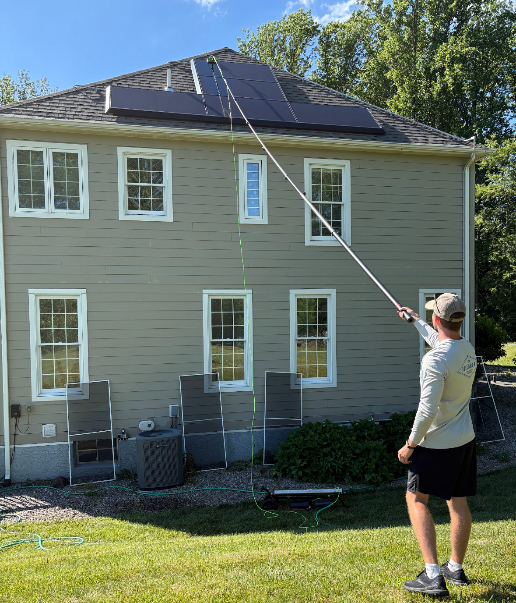

Services & Pricing
Premium exterior and interior care for windows, solar panels, gutters, and siding across Chester, Montgomery, Delaware, and Carbon counties.
Exterior Window
Cleaning
Our exterior service covers glass, sills, frames, and tracks. We also clean garage door panes, sliders, storm doors, and skylights — every opening, not just the easy ones.
We use professional-grade equipment including a water-fed pole system for higher windows, delivering a streak-free finish without ladders on your property.

Interior Window
Cleaning
Interior cleaning is done with care around your furniture, flooring, and decor. We use microfiber cloths and professional solution to leave glass spotless and streak-free — no drips, no mess left behind.

Screen Cleaning
We carefully clean window screens to remove dust, pollen, and debris — so they look refreshed and let in more light. Usually done alongside a full window clean.

Solar Panel
Cleaning
Safe, streak-free solar panel cleaning that helps restore appearance while protecting your system's surface. Dirt and debris buildup can reduce output — we clear it without damaging panels.

Gutter Cleaning
Debris removal, flushing, and inspection to help keep water flowing properly and protect your home from clogs and overflow. We do the whole run, not just the visible sections.

Soft Scrubs for
Siding & Brick
Soft scrubs for siding, brick, and other exterior surfaces remove dirt, mildew, and buildup without damaging your home's finish. A clean exterior makes the whole property look cared for.

Pricing
Pricing varies based on window type, number of panes, and whether the job includes interior and exterior work. Reach out for a free on-site estimate.
| Service | Rate | What's Included |
|---|---|---|
| Window Cleaning | $11 – $15 per window | Interior and exterior glass, tracks, sills, frames, and optional storm window care. |
| Screen Cleaning | $5 per screen | Dust, pollen, and debris removal using gentle cleaning methods. |
| Solar Panel Cleaning | $15 – $20 per panel | Streak-free panel washing to remove dirt and buildup while protecting surfaces. |
| Gutter Cleaning | $75 – $100 per side | Debris removal, flush, and inspection to help prevent clogs and overflow. |
Get a Free Estimate
Tell us about your home and we'll get back to you with a price. No obligation.